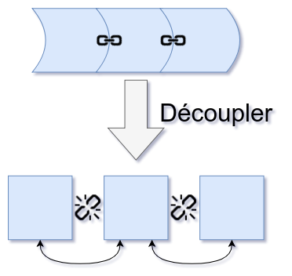
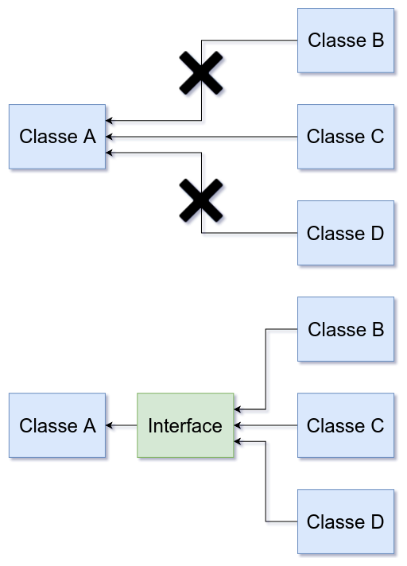
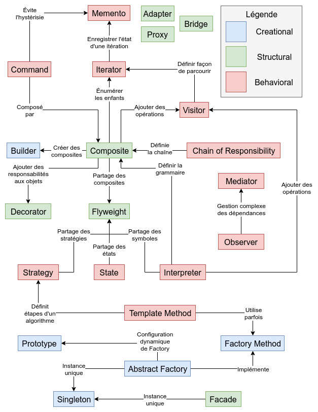

Qu'est-ce que c'est ?
Les design patterns sont des solutions génériques permettant de répondre à des problèmes réccurents rencontrés en conception.
Il s'agit d'architectures utilisant les principes fondamentaux de la programmation orientée objet et permettant d'organiser son code de manière optimale
Historique
Les patterns ont été introduit dans le domaine de l'architecture par Christopher Alexander fin des années 70.
Ils ont ensuite été repris dans le domaine du développement logiciel puis popularisés par le livre "Design Patterns: Elements of Reusable Object-Oriented Software" rédigé en 1994 par Erich Gamma, Richard Helm, Ralph Johnson et Vlissides John (GoF).
SOLID
- Single responsibility : Une classe ou une méthode doit faire une et une seule chose.
- Open/closed : Classe ouverte à l’extension mais fermée à la modification.
- Liskov substitution : Favoriser l’utilisation des interfaces pour permettre d’utiliser différents objets implémentant cette interface.
- Interface segregation : Préférer créer plusieurs interfaces spécifiques que peu d’interfaces répondant à plusieurs besoins.
- Dependency inversion : Utiliser une couche abstraite pour permettre la communication entre les modules de haut niveau et les modules de base niveau.
Découplage du code
Les design patterns vous permettrons de découpler (low coupling) les objets, c’est-à-dire d’éviter de créer des liens forts entre plusieurs objets.

Le découplage permet d’apporter une plus grande flexibilité et extensibilité à votre code.
Découplage du code
Dans cet exemple, la classe Classe A fait référence directement à la classe Classe C ce qui empêche les classes Classe B et Classe D d’utiliser la classe Classe A . Dans le schéma suivant, la classe Classe A fait référence à une interface ce qui permet ensuite aux classes Classe B , Classe C et Classe D d’utiliser la classe Classe A .

Découplage du code
class ClasseA
{
private $autreClasse;
// Méthode avec couplage fort
public function maMethode()
{
$this->autreClasse = new ClasseB();
}
// Méthode avec couplage faible
public function maMethode(Interface $maClasse)
{
$this->autreClasse = $maClasse;
}
}
Catégories de design patterns
- Creational (de création) : Il s’agit de design patterns permettant d’améliorer le processus de création d’un objet. Par exemple, Abstract Factory permettra d’instancier des objets sans faire appel directement à leurs classes.
- Structural (de structure) : Ce sont des design patterns permettant de décrire différentes manières d’associer des objets. Par exemple, Decorator vous permettra d’éviter l’utilisation excessive de l’héritage en ajoutant dynamiquement des fonctionnalités aux objets.
- Behavioral (de comportement) : Les design patterns de cette catégorie permettent de faire interagir plusieurs objets ensemble dans le but de réaliser une tâche qu’un seul objet ne pourrait pas faire tout seul. Par exemple, le design pattern Observer vous permettra de mettre en place un système de notification entre vos objets. Le design pattern Template Method que nous avons découvert dans le chapitre précédent fait également partie de cette catégorie.
Creational
- Abstract Factory : Interface permettant de créer des objets de la même famille sans faire appel directement à leurs classes.
- Builder : Séparer la construction d’un objet complexe de sa représentation afin que le même processus de construction puisse créer différentes représentations.
- Factory Method : Interface permettant de créer des objets mais laissant les classes enfants décider de la classe à instancier.
- Prototype : Spécifie le type d’objet à créer en utilisant une instance de prototype puis créer des objets en copiant ce prototype.
- Singleton : Permet de s’assurer qu’une classe n’a été instanciée qu’une seule fois.
Structural
- Adapter : Convertit l’interface d’une classe en une autre interface attendue par le client. Cela permet à des classes de pouvoir communiquer entre-elles même si leurs interfaces sont incompatibles.
- Bridge : Sépare une abstraction de son implémentation pour que les deux puissent varier indépendamment.
- Composite : Décompose plusieurs objets dans une structure en arbre afin de représenter une hiérarchie. Cela permet ensuite de traiter un objet ou un groupe d’objet de la façon uniforme.
- Decorator : Évite l’utilisation excessive de l’héritage en ajoutant dynamiquement des fonctionnalités aux objets.
- Facade : Interface simplifiant l’utilisations d’autre interfaces sous-jacentes.
- Flyweight : Permet de manipuler de nombreux objets de petites tailles en diminuant le nombre d’objets à instancier.
- Proxy : Classe venant remplacer une autre classe et permettant ainsi de contrôler les accès.
Behavioral
- Chain of Responsibility : Évite de créer un lien fort entre l’objet envoyant une requête et celui chargé de la traitée en laissant d’autres objets la possibilité de s’en charger. Plusieurs objets peuvent ainsi être chaînés les uns aux autres et faire suivre une requête s'ils ne peuvent pas la traiter.
- Command : Encapsule une requête dans un objet qui pourra ensuite être paramétré, positionné dans une file d’attente, dans des logs ou pourra être annulé.
- Interpreter : A partir d’un langage, définit une représentation de celui-ci ainsi qu’un interpréteur qui utilisera la représentation pour interpréter un message.
- Iterator : Permet d'accéder à un ensemble d’éléments de façon séquentielle sans en exposer sa représentation.
- ...
Behavioral
- Mediator : Définit un objet qui encapsule la manière dont plusieurs objets vont interagir entre eux évitant ainsi un couplage fort entre les objets.
- Memento : Sans remettre en question le principe d’encapsulation, ce design pattern permet d’externaliser l’état interne d’un objet permettant ainsi de le restaurer à un état antérieur.
- Observer : Définit une relation un à plusieurs entre plusieurs objets de tel façon que si l’état d’un objet est modifié, d’autres objets pourront être notifiés du changement.
- State : Permet à un objet de modifier son comportement lorsque son état interne change.
- Strategy : Définit une famille d’algorithmes en les encapsulant permettant ainsi de les interchanger plus facilement.
- Template Method : Définit le squelette d’un algorithme en laissant les classes enfants redéfinir certaines étapes de l'algorithme.
- Visitor : Représente une opération à effectuer sur un ensemble d’objets sans avoir à les modifier.
Relations entre les design patterns

Autres design patterns
La liste présentée dans les slides précédentes n'est pas une liste exhaustive. Cette liste de 23 design patterns ayant été publié en 1994, de nombreux design patterns ont été découverts depuis.
On trouvera en autre les design patterns Mock Object (utilisé par exemple par la librairie PHPUnit), Front Controller (utilisé principalement par les frameworks web pour spécifier un point d'entré unique pour l'ensemble des requêtes) ou encore Marker (utilisé pour la mise en place d'annotations).